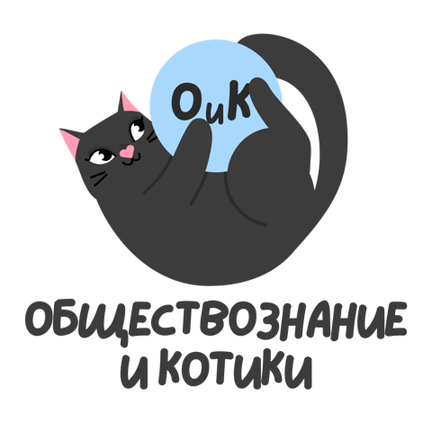
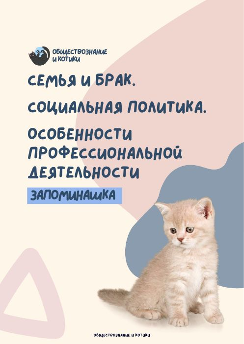

Семья и брак. Социальная политика. Особенности профессиональной деятельности
Смотрим лекции и заполняем скрипт, читаем учебник, учим запоминашку, разбираем российские реалии и критерии заданий 22 и 25 — а потом проверяем себя тестами и второй частью.

Видеолекции
Три лекции по теме. Удобнее всего смотреть с пустым скриптом под рукой.
Скрипты для заполнения
Пустые скрипты с пропусками — распечатайте и заполняйте во время лекции.
Готовые конспекты
Заполненные версии — для проверки или если хочется скачать сразу готовое.
Учебники ФПУ
Отрывки из учебников федерального перечня — если хочется почитать материал, а не только послушать.
Запоминашка
Краткая выжимка того, что нужно именно выучить.

Запоминашка · тема 4
Термины, классификации и факты, которые обязательно нужно знать к экзамену. Распечатайте и повторяйте перед тестом.
PDF · 6 страниц
Урок по российским реалиям
Социальная политика и национальные проекты РФ — готовые примеры для второй части.
Критерии заданий 22 и 25
Как пишут эти задания на максимальный балл. К каждому уроку — свой скрипт.
Разминки
Видео на 5–10 минут: обобщение, закрепление и короткая практика. Можно посмотреть, если ничего не успеваете.
Практика
После каждого ответа сразу видно, верно или нет, и пояснение.
Тест · база
заданий на основные понятия темы. Начните с него.
Тест · про
заданий посложнее — дополнительная нарешка.
Вторая часть
заданий с развёрнутым ответом. Сначала напишите сами, потом сверьтесь с эталоном.
Вторая часть
Напишите ответ в поле (он сохранится в этом браузере), потом откройте эталон и сравните.